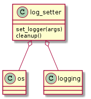

This is a module to set the logging level.
- Instead of building a class the whole module is used to access the variables and functions within it.
- By default this module uses the package name with .log appended to it as the name of the log-file name.
Note
To make it portable this module uses introspection to get the name of the package. This means that it should be at the top-level of the package so that modules in sub-folders can use it.

| set_logger(args) | Creates a logger and sets the level based on args. |
| cleanup([log_directory, log_name]) | Saves the last log to log-directory |
Since the log-filename is set in this module a cleanup function is put here to be accessible outside of the main flow of the system (to allow it to be called even in the event of a crash).
- A sub-directory is created (default is “last_log”)
- The log is moved to the sub-directory
This function was implemented so the log does not continue to grow even as the code is re-run, but there is at least one copy of the log backed-up.
Example use:
log_setter.cleanup("output_directory_name")
This is the main function to use. It is intended to be used by the ArgumentParser to create sub-commands so it expects a namespace with command-line arguments as attributes. The logging-level is set according to the following:
| debug | silent | LogLevel |
|---|---|---|
| False | False | Info |
| False | True | Error |
| True | False | Debug |
| True | True | Debug |
Example Use:
log_setter(args)